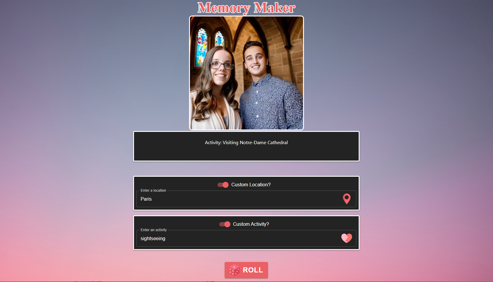

Memory Maker AI

Technologies Used:
- React JS
- DreamBooth Stable Diffusion model
- OpenAI API
- Replicate API
- AWS S3
- GitHub
Description:
To mitigate any indecisiveness in selecting an activity to do, this AI helps pick one out for us, regardless of where we are. The app prompts for a location or a category of activity, and then prompts ChatGPT to generate an in-depth activity and a stable diffusion model prompt that outputs a uniquely generated image of that activity.
A stable diffusion model was downloaded and finetuned on multiple faces in different scenarios in hopes of generating accurate and realistic images in a variety of activities. The model was then deployed on Replicate and accessed through API calls by the app, which is hosted on an AWS S3 bucket.